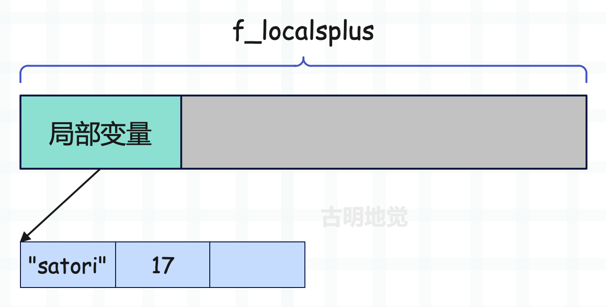

楔子
函数最大的特点就是可以接收参数，如果只是单纯的封装，未免太无趣了。对于函数来说，参数会传什么，事先是不知道的，函数体内部只是利用参数做一些事情，比如调用参数的 get 方法。但是到底能不能调用 get 方法，就取决于给参数传的值是什么了。
因此可以把参数看成是一个占位符，调用的时候，将值传进去赋给相应的参数，然后将函数内部的逻辑走一遍即可。
参数的类别
调用函数时传递的参数，根据形式的不同可以分为四种类别：
- 位置参数（positional argument）；
- 关键字参数（keyword argument）；
- 扩展位置参数（excess positional argument）；
- 扩展关键字参数（excess keyword argument）；
参数分为形参和实参，在英文中形参叫做 parameter，实参叫做 argument。但在中文里区分的不是那么明显，我们一般统一称为参数。
然后我们看一下 call_function。
Py_LOCAL_INLINE(PyObject *) _Py_HOT_FUNCTION
call_function(PyThreadState *tstate, PyObject ***pp_stack, Py_ssize_t oparg, PyObject *kwnames)
{
PyObject **pfunc = (*pp_stack) - oparg - 1;
PyObject *func = *pfunc;
PyObject *x, *w;
Py_ssize_t nkwargs = (kwnames == NULL) ? 0 : PyTuple_GET_SIZE(kwnames);
Py_ssize_t nargs = oparg - nkwargs;
PyObject **stack = (*pp_stack) - nargs - nkwargs;
// ...
}
CALL_FUNCTION 指令的 oparg 记录了函数的参数个数，包括位置参数和关键字参数。虽然扩展位置参数和扩展关键字参数是更高级的用法，但本质上也是由多个位置参数、多个关键字参数组成的。这就意味着，虽然函数中存在四种参数，但是只要记录位置参数和关键字参数的个数，就能知道一共有多少个参数，进而知道一共需要多大的内存来维护。
因此 call_function 里面的 nkwargs 就是调用函数时传递的关键字参数的个数，nargs 就是传递的位置参数的个数，两者加起来等于 oparg。然后是函数内部的局部变量的个数，可以通过 co_nlocals 来获取。
注意：局部变量包括了参数，因为函数参数也是局部变量，它们在内存中是连续放置的，局部变量的名称都存储在符号表 co_varnames 中。当虚拟机为函数申请局部变量的内存空间时，就需要通过 co_nlocals 知道局部变量的总数。
可能会有人将 co_nlocals 和 co_argcount 搞混，前者表示局部变量的个数，后者表示可以通过位置参数或关键字参数传递的参数个数。
def foo(a, b, c, d=1):
pass
print(foo.__code__.co_argcount) # 4
print(foo.__code__.co_nlocals) # 4
def foo(a, b, c, d=1):
a = 1
b = 1
print(foo.__code__.co_argcount) # 4
print(foo.__code__.co_nlocals) # 4
def foo(a, b, c, d=1):
e = 1
print(foo.__code__.co_argcount) # 4
print(foo.__code__.co_nlocals) # 5
co_nlocals 等于参数的个数加上函数体中新创建的局部变量的个数，注意：函数参数也是局部变量，比如有一个参数 a，但函数体里面新建了一个变量也叫 a，这是重新赋值，因此还是相当于一个参数。
但是 co_argcount 只记录参数的个数，因此一个很明显的结论：对于任意一个函数，co_nlocals 一定大于等于 co_argcount。
def foo(a, b, c, d=1, *args, **kwargs):
pass
print(foo.__code__.co_argcount) # 4
print(foo.__code__.co_nlocals) # 6
我们看到，对于扩展位置参数和扩展关键字参数来说，co_argcount 是不算在内的，因为完全可以不传递，所以直接当成 0 来算。但我们在函数体内部肯定能拿到 args 和 kwargs，这也是两个局部变量，因此 co_argcount 是 4，co_nlocals 是 6。
所有的扩展位置参数都存储在一个 PyTupleObject 对象中，所有的扩展关键字参数都存储在一个 PyDictObject 对象中。
co_argcount 和 co_nlocals 的值在编译的时候就已经确定。
位置参数的传递
下面来看看位置参数是如何传递的：
import dis
code = """
def foo(name, age):
gender = "female"
print(name, age)
foo("satori", 17)
"""
dis.dis(compile(code, "<func>", "exec"))
相信对于现在的我们来说，下面的字节码已经没有任何难度了。
0 LOAD_CONST 0 (<code object foo at 0x7f3>)
2 LOAD_CONST 1 ('foo')
4 MAKE_FUNCTION 0
6 STORE_NAME 0 (foo)
8 LOAD_NAME 0 (foo)
10 LOAD_CONST 2 ('satori')
12 LOAD_CONST 3 (17)
14 CALL_FUNCTION 2
16 POP_TOP
18 LOAD_CONST 4 (None)
20 RETURN_VALUE
Disassembly of <code object foo at 0x7f3...>:
0 LOAD_CONST 1 ('female')
2 STORE_FAST 2 (gender)
4 LOAD_GLOBAL 0 (print)
6 LOAD_FAST 0 (name)
8 LOAD_FAST 1 (age)
10 CALL_FUNCTION 2
12 POP_TOP
14 LOAD_CONST 0 (None)
16 RETURN_VALUE
这里我们先看 foo("satori", 17) 的字节码：
8 LOAD_NAME 0 (foo)
10 LOAD_CONST 2 ('satori')
12 LOAD_CONST 3 (17)
14 CALL_FUNCTION 2
16 POP_TOP
首先将函数以及相关参数压入运行时栈：

然后执行 CALL_FUNCTION 指令，由于在调用时全部都是位置参数，那么根据之前介绍的函数调用链路，我们知道它最终会执行 function_code_fastcall，即快速通道。这个函数之前介绍过了，这里再拿出来解释一遍。
static PyObject* _Py_HOT_FUNCTION
function_code_fastcall(PyCodeObject *co, PyObject *const *args, Py_ssize_t nargs,
PyObject *globals)
{
// 栈帧对象
PyFrameObject *f;
// 线程状态对象
PyThreadState *tstate = _PyThreadState_GET();
// f->localsplus
PyObject **fastlocals;
Py_ssize_t i;
PyObject *result;
assert(globals != NULL);
assert(tstate != NULL);
// 为调用的函数创建 PyFrameObject，参数是 PyCodeObject 和 global 空间
// 因此最后执行的时候其实没有 PyFunctionObject 什么事，它只是起到一个打包和输送的作用
f = _PyFrame_New_NoTrack(tstate, co, globals, NULL);
if (f == NULL) {
return NULL;
}
// 获取函数栈帧的 f_localsplus
fastlocals = f->f_localsplus;
// 调用函数时传递的参数会被提前压入运行时栈，注意：此时的运行时栈是模块的运行时栈
// 因为加载参数入栈时，函数还没调用呢。所以对于当前来说，参数被压入了模块的运行时栈
// 其中 nargs 表示参数个数，args 指向运行时栈的第一个参数
// 然后将运行时栈中的参数拷贝到局部变量对应的内存中
for (i = 0; i < nargs; i++) {
Py_INCREF(*args);
fastlocals[i] = *args++;
}
// 调用 PyEval_EvalFrameEx、进而调用 _PyEval_EvalFrameDefault
// 以新创建的栈帧为执行环境，执行内部的字节码，执行完毕后将返回值赋给 result
result = PyEval_EvalFrameEx(f,0);
// 如果 f 的引用计数大于 1，说明栈帧被保存起来了
// 引用计数减一之后，由于不会被销毁，所以还要被 GC 跟踪
if (Py_REFCNT(f) > 1) {
Py_DECREF(f);
_PyObject_GC_TRACK(f);
}
else {
++tstate->recursion_depth;
Py_DECREF(f);
--tstate->recursion_depth;
}
// 返回 result
return result;
}
从源码中可以看到，虚拟机首先通过 _PyFrame_New_NoTrack 创建了函数 foo 对应的栈帧对象。随后将参数逐个拷贝到新创建的栈帧对象的 f_localsplus 中，f_localsplus 是一个数组，在概念上被分成了四部分，而源码中的索引是从 0 开始的，所以运行时栈中的参数被拷贝到了局部变量对应的内存中。
再次强调：上面说的运行时栈指的是模块栈帧的运行时栈，因为加载参数的时候还没有涉及函数的调用。
// 函数、以及参数都位于模块栈帧的运行时栈里面
8 LOAD_NAME 0 (foo)
10 LOAD_CONST 2 ('satori')
12 LOAD_CONST 3 (17)
// 加载完毕之后，在模块的栈帧中调用函数
14 CALL_FUNCTION 2
16 POP_TOP
调用函数 foo 时，为其创建新的栈帧，并将参数从模块栈帧的运行时栈拷贝到函数栈帧的 f_localsplus（局部变量对应的内存）里面。而在拷贝之后，函数 foo 栈帧的 f_localsplus 布局如下：

栈帧 f_localsplus 的第一段内存用于存储局部变量，不管是函数参数，还是函数内部新创建的局部变量，它们都是局部变量，都保存在 f_localsplus 的第一段内存中。其中 name 和 age 是参数，它们在创建栈帧之后、执行帧评估函数之前，就已经被设置在函数栈帧的 f_localsplus 中了。
至于图中的第三个位置，显然它用于存储局部变量 gender 的值，只不过 gender 是函数内部创建的局部变量，它需要等到函数执行时才会设置。当执行到 gender = "female" 时，通过 f->f_localsplus[2] = "female" 进行设置。
总结：在调用函数时，要提前确定参数，而参数会被压入运行时栈，由于此时函数还没有调用，所以这里的运行时栈是模块栈帧的 f_localsplus 的运行时栈。当参数确定完毕后，开始执行 CALL_FUNCTION 指令，经过一系列操作之后，最终会为调用的函数创建一个新的栈帧。
然后是参数拷贝，因为参数还位于模块栈帧的 f_localsplus 的运行时栈里面，所以要将它们拷贝到函数栈帧的 f_localsplus 的局部变量对应的内存里面。这样的话，函数在执行时就可以通过 f_localsplus[0] 和 f_localsplus[1] 获取变量 name 和 age 的值了，我们看一下函数对应的字节码。
// 此时开启了函数 foo 内部代码的执行
// 将字符串常量压入运行时栈
0 LOAD_CONST 1 ('female')
// 将元素从栈顶弹出，并和变量 gender 进行绑定
// 由于 "gender" 位于符号表中索引为 2 的位置
// 所以执行 f_localsplus[2] = "female"
2 STORE_FAST 2 (gender)
4 LOAD_GLOBAL 0 (print)
// 将局部变量 name 和 age 压入运行时栈
// 或者说将 f_localsplus[0] 和 f_localsplus[1] 压入运行时栈
// 那么问题来了，这两个变量是什么时候创建的呢？
// 很明显，在执行帧评估函数之前，name 和 age 的值就已经被设置在函数栈帧的 f_localsplus 中了
6 LOAD_FAST 0 (name)
8 LOAD_FAST 1 (age)
10 CALL_FUNCTION 2
12 POP_TOP
14 LOAD_CONST 0 (None)
16 RETURN_VALUE
所以函数的参数在执行帧评估函数之前就确定了，它们的值位于函数栈帧的 f_localsplus 里面。
位置参数的访问
当参数拷贝的动作完成之后，就会进入 PyEval_EvalFrameEx，然后进入 _PyEval_EvalFrameDefault 真正开始 foo 的调用动作。会抽出栈帧里的 f_code，对指令逐条执行，而这个过程会涉及参数的访问。当然这就很简单了，我们之前介绍过局部变量是如何创建和访问的，而参数也是局部变量，这里我们再来复习一下。
case TARGET(LOAD_FAST): {
// oparg 表示变量名在符号表中的索引
// 同时也是变量值在 f_localsplus 中的索引，这两者是对应的
// 所以这行代码等价于 PyObject *value = f_localsplus[oparg]
PyObject *value = GETLOCAL(oparg);
// f_localsplus 里面的元素初始为 NULL，当创建局部变量时，会修改 f_localsplus
// 所以如果获取到的 value 为 NULL，这就说明在访问变量时，它还没有完成赋值
// 此时会抛出 UnboundLocalError
if (value == NULL) {
format_exc_check_arg(tstate, PyExc_UnboundLocalError,
UNBOUNDLOCAL_ERROR_MSG,
PyTuple_GetItem(co->co_varnames, oparg));
goto error;
}
Py_INCREF(value);
// 将局部变量的值压入运行时栈
PUSH(value);
FAST_DISPATCH();
}
case TARGET(STORE_FAST): {
PREDICTED(STORE_FAST);
// STORE_FAST 用于变量赋值，但在赋值之前，它的值一定已经被压入了运行时栈
// 所以要将值从栈顶弹出
PyObject *value = POP();
// oparg 表示变量名在符号表中的索引，那么它也是变量值在 f_localsplus 中的索引
// 所以这行代码等价于 f_localsplus[oparg] = value
SETLOCAL(oparg, value);
FAST_DISPATCH();
}
// 然后我们看一下 GETLOCAL 和 SETLOCAL 这两个宏
// 在帧评估函数中，会创建变量 fastlocals，并将其赋值为 f->f_localsplus
#define GETLOCAL(i) (fastlocals[i])
#define SETLOCAL(i, value) do { PyObject *tmp = GETLOCAL(i); \
GETLOCAL(i) = value; \
Py_XDECREF(tmp); } while (0)
非常简单，都是之前说过的内容。我们再总结一下变量的创建和访问：
- 全局变量是通过字典存储的，这个字典也叫 global 名字空间，变量名就是里面的 key，变量值就是里面的 value。创建一个全局变量，本质上就是往 global 空间中添加一个键值对；访问一个全局变量，本质上就是将变量名作为 key、从 global 空间中查询 value。
- 局部变量是通过数组静态存储的，函数内部的局部变量有哪些在编译时就确定了，变量的名称都保存在符号表中，变量的值都保存在 f_localsplus 中，并且变量名在符号表中的索引，和变量值在 f_localsplus 中的索引是一致的。创建一个局部变量，本质上就是基于变量名在符号表中的索引去修改 f_localsplus；访问一个局部变量，本质上就是基于变量名在符号表中的索引去查询 f_localsplus，如果查询到的结果为 NULL，说明该局部变量在赋值之前就被访问了，于是会抛出 UnboundLocalError。
前面说了，函数参数和函数内部新创建的变量都属于局部变量，它们的访问逻辑是完全一致的，没有任何区别。只是创建的时候，函数参数在执行帧评估函数之前就已经创建了，被设置在了 f_localsplus 中，执行的时候直接访问即可。
小结
关于位置参数在函数调用时是如何传递的、在函数执行时又是如何被访问的，现在已经真相大白了。
在调用函数时，虚拟机将函数和参数依次压入调用者栈帧的运行时栈中，而在 function_code_fastcall 里面会为函数创建新的栈帧，也就是被调用者栈帧。然后将调用者栈帧的运行时栈中的参数依次拷贝到被调用者栈帧的 f_localsplus 中。
所以在访问函数参数时（或者说局部变量），虚拟机并没有按照通常访问符号的做法，去查什么名字空间，而是根据索引访问 f_localsplus 中和符号绑定的值（指针）。而这种基于索引（偏移位置）来访问参数的方式也正是位置参数的由来，并且这种访问方式的速度也是最快的。
调用函数 foo 时会创建新的栈帧，而等函数 foo 执行完之后，也会回退到模块的栈帧中，并拿到函数 foo 的返回值。然后再将运行时栈里的函数参数清空，回到 CALL_FUNCTION 指令，通过 PUSH(res) 将函数的返回值入栈，接着在模块栈帧中继续执行下一条指令。
欢迎大家关注我的公众号：古明地觉的编程教室。

如果觉得文章对你有所帮助，也可以请作者吃个馒头，Thanks♪(･ω･)ﾉ。